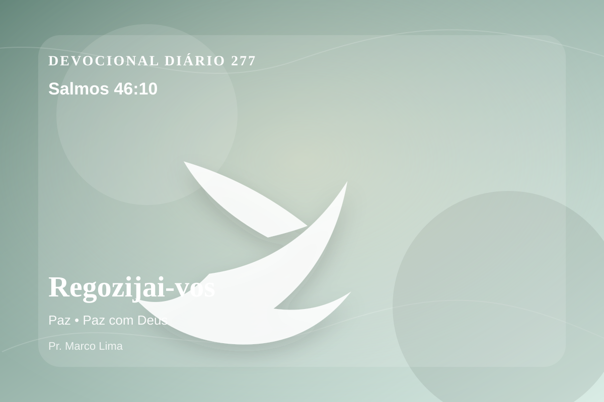

Regozijai-vos
Aquietai-vos, e sabei que eu sou Deus; sou exaltado entre as nações, sou exaltado na terra.
Pensamento
Hoje, Salmos 46:10 não deve ser lido como uma frase isolada, mas como uma Palavra de Deus para alcançar a consciência e reorganizar a vida diante de Cristo.
A quietude bíblica não é fuga; é rendição. Deus chama o coração a parar de lutar como se tudo dependesse de sua força e reconhecer que Ele é Senhor sobre a história.
O tema de paz precisa ser recebido com simplicidade e seriedade. Esse ensino precisa descer da mente para a prática. A paz bíblica é mais profunda que tranquilidade externa. Ela é fruto da presença de Deus, da reconciliação em Cristo e da confiança de que o Senhor permanece governando mesmo quando a vida parece instável.
Pergunte com honestidade: tenho obedecido a Deus nessa área ou apenas concordado com o texto? A fé bíblica não se contenta com admiração; ela se expressa em arrependimento, confiança e passos concretos.
Arrependimento não é apenas sentir peso na consciência; é voltar-se para Deus, abandonar o caminho que entristece o Senhor e confiar que a graça de Cristo é suficiente para perdoar e transformar.
Este é o evangelho que sustenta toda aplicação: Jesus Cristo morreu pelos pecadores, ressuscitou em vitória e chama cada pessoa a responder com fé, arrependimento e uma vida rendida ao Seu senhorio.
O evangelho é a resposta mais profunda para essa necessidade: Jesus morreu pelos nossos pecados, ressuscitou e chama pecadores ao arrependimento e à vida nova.
Hoje, escolha uma atitude pequena e verificável: uma oração honesta, uma conversa corrigida, um pedido de perdão, uma renúncia ou uma decisão de obedecer sem adiar.
Para Praticar Hoje
- Leia Salmos 46:10 lentamente e destaque uma palavra ou expressão central do texto.
- Confesse a Deus um pecado, resistência ou frieza espiritual que esta Palavra revelou.
- Declare sua fé em Jesus Cristo e pratique hoje uma atitude concreta de arrependimento e obediência.
Oração
Senhor Deus, eu recebo a Tua Palavra em Salmos 46:10 com reverência. Reconheço que preciso de arrependimento, perdão e nova vida. Creio que Jesus Cristo morreu pelos meus pecados e ressuscitou para me salvar. Lava meu coração, governa minha vida e conduz-me em obediência simples ao Teu evangelho. Em nome de Jesus. Amém.
{kind=link}